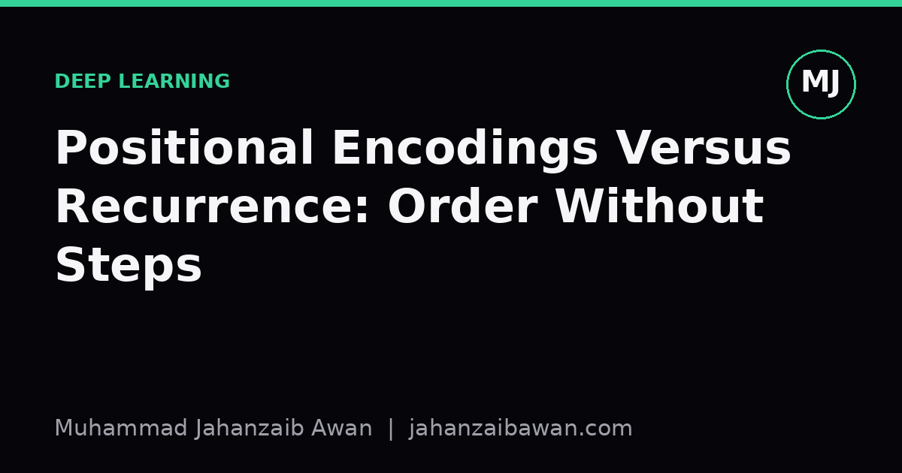

Positional Encodings Versus Recurrence: Order Without Steps
Recurrent networks earn their sense of sequence by marching through time one step at a time. Transformers fake it with arithmetic. Here is why that trade matters.

Why order is not free
Feed a bag of words into a model without telling it which word came first, and you have thrown away most of the meaning. 'The dog bit the man' and 'the man bit the dog' contain the same tokens. Any architecture that treats input as an unordered set needs some mechanism bolted on to recover sequence, because the raw arithmetic of matrix multiplication does not care about order at all. Recurrent networks and transformers solve this problem in almost opposite ways, and the choice has consequences far beyond a line in a paper's methods section.
A recurrent neural network gets order for free, structurally. It processes one token at a time, updating a hidden state that carries information forward. Token three is only ever seen after tokens one and two have already been folded into the state. Order is not represented, it is enacted. The model literally cannot see token five before token four, because the computation graph will not allow it.
A transformer, by contrast, looks at the whole sequence at once through self-attention. Every token can attend to every other token in a single layer, which is wonderful for parallelism and for capturing long-range dependencies without the vanishing-gradient trouble that plagues long recurrent chains. The cost is that attention, on its own, is permutation-invariant. Shuffle the tokens and feed them in any order, and a bare self-attention layer produces the same output, just correspondingly shuffled. Something extra has to tell the model where each token sits.
Two solutions, worked through
Recurrence's solution is temporal: the hidden state at step t is a function of the hidden state at step t minus one and the current input. If I feed in a short sentence of six words, by the time the network reaches word six its hidden state has been updated six times, each update conditioned on the previous one. The ordering is baked into the update rule itself, which is elegant, but it means the network must process steps sequentially: you cannot compute step six's hidden state before step five's exists. For a sequence of length five hundred, that is five hundred sequential operations that cannot be parallelised across time, even on fast hardware.
Positional encoding's solution is additive and parallel. Before any attention happens, each token's embedding gets a vector added to it that encodes its position: position one gets one fixed vector, position two gets another, and so on. The original scheme used sine and cosine functions at different frequencies, so that position seventeen and position eighteen produce vectors that are close but distinguishable, and the model can in principle learn to compute relative offsets through simple linear operations on these encodings. Learned positional embeddings do the same job with a lookup table trained end to end instead of a fixed formula.
Concretely, imagine a sentence of length twenty being processed by both approaches. The recurrent model needs twenty sequential steps, each one waiting on the last, before it has seen the whole sentence. The transformer with positional encodings adds twenty position vectors to twenty token embeddings in one parallel operation, then lets every token attend to every other token simultaneously across all twenty positions. The transformer finishes its forward pass in far fewer sequential operations, even though it is doing more total computation per layer. That asymmetry, few sequential steps versus many, is a large part of why transformers scale so well on modern parallel hardware while large RNNs became impractical to train at the same scale.
What each approach trades away
Recurrence pays for its structural guarantee of order with difficulty learning long-range dependencies. Information from token one has to survive twenty, fifty, or five hundred sequential updates to influence the output near the end of a long sequence, and gradients flowing backward through that many steps tend to shrink or explode. Gating mechanisms in LSTMs and GRUs mitigate this considerably, but they do not eliminate it. In practice, recurrent models remain genuinely good at problems with strong local, step-by-step structure, but they struggle more as the gap between relevant tokens grows.
Positional encodings pay for their parallelism with something subtler: the model has to learn what to do with the positional signal, rather than having order enforced by the computation itself. A sine-cosine encoding gives every position a unique vector, but nothing guarantees the attention layers will use that information sensibly unless training pushes them to. This is also why extrapolation beyond the sequence lengths seen in training is a known weak spot: a model trained on sequences up to length five hundred has encountered position vectors only up to that length, and its behaviour on position six hundred is an extrapolation into territory the fixed formula covers but the learned weights never practised on. Several newer schemes, relative position encodings and rotary embeddings among them, exist precisely to make this extrapolation and the representation of relative distance more robust, which tells you the original absolute scheme was never treated as a finished solution.
There is also a leakage-flavoured lesson here for anyone evaluating sequence models. If you are testing a model's ability to generalise to longer sequences than it trained on, the mechanism for encoding position is not a neutral implementation detail, it directly determines whether that generalisation is even plausible. A recurrent model's notion of order does not degrade with length in the same way; a transformer's might, depending on which positional scheme it uses. Reporting a single accuracy number across mixed sequence lengths without checking this can quietly hide a failure mode that only shows up once you split your test set by length.
The practical takeaway
Neither approach is simply better. Recurrence encodes order as an unavoidable consequence of sequential computation, at the cost of training speed and long-range gradient flow. Positional encodings encode order as an auxiliary signal added to otherwise order-blind computation, buying parallelism at the cost of needing the model to learn how to use that signal, and sometimes struggling to extrapolate past training lengths. When I am choosing between architectures or just trying to understand why a model fails on long inputs, the first question I ask is which of these two mechanisms, if either, is doing the work of representing order, and whether my evaluation actually tests the lengths and distances where that mechanism is weakest.